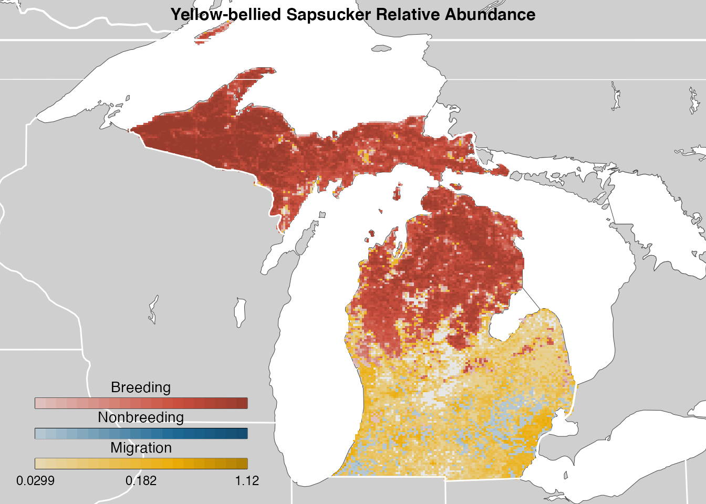
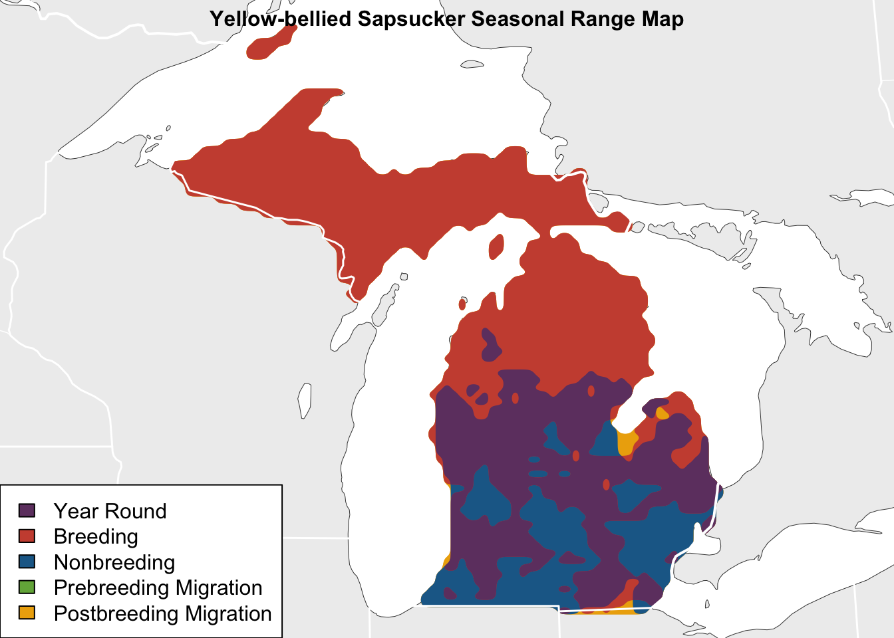
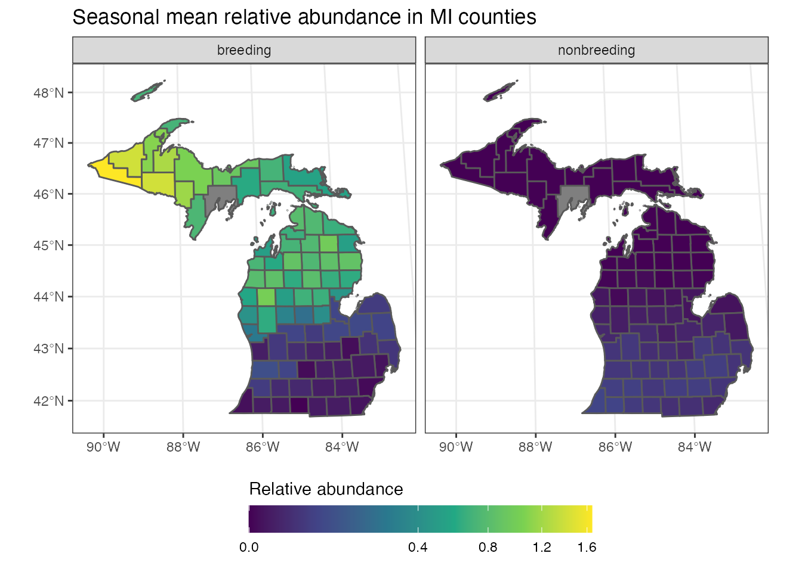
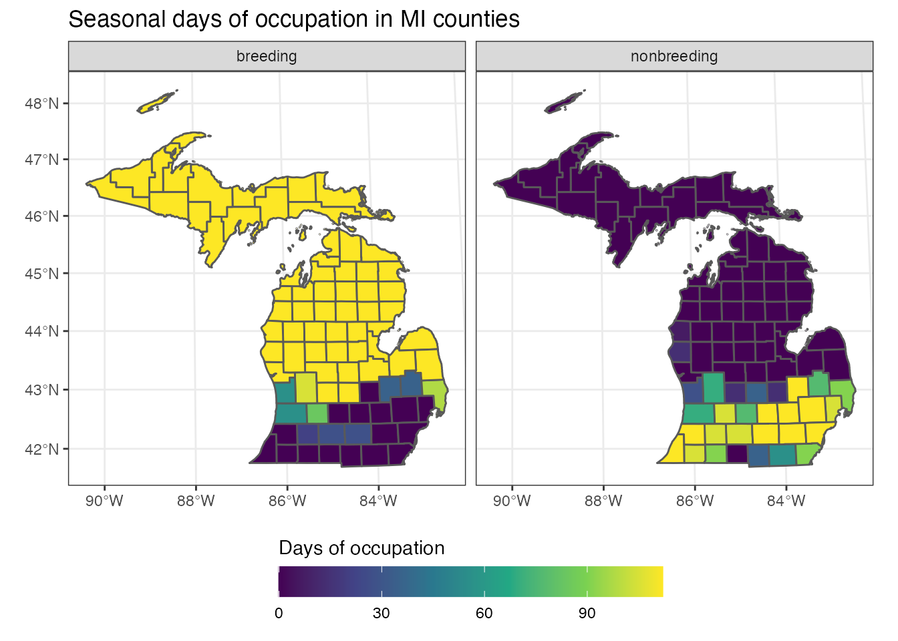

vignettes/ebirdst-advanced-mapping.Rmd
ebirdst-advanced-mapping.RmdThis vignette describes how to recreate the seasonal map products found on the eBird Status and Trends pages. First, the vignette will cover how to average the abundance data seasonally, then it will proceed with examples of making abundance maps, aggregating and smoothing data for range maps, and, finally, provide examples of calculating regional summary statistic. Throughout this vignette we will use the simplified example dataset available through the ebirdst_download() function, which consists of the Yellow-bellied Sapsucker data spatially subset to the state of Michigan. However, these methods can be applied to the full datasets for any of the eBird Status and Trends species.
Let’s begin by loading all the packages we’ll need for this vignette.
Before we do anything else, we’ll need to download and load the example abundance data for Yellow-bellied Sapsucker.
# download to a temp directory for the vigette
# in practice, change to permanent directory the status and trends downloads
sp_path <- ebirdst_download(species = "example_data")
# load the abundance data
# this automaticaaly labels layers with their dates
abd <- load_raster("abundance_umean", path = sp_path)The abundance data now consist of a RasterStack object with 52 layers, each corresponding to the relative abundance for a single week.
We’ll also need some additional spatial data (state and country borders, lakes, etc.) to provide context for the maps we’ll make. Natural Earth is the best source for free map data and there’s an associated R package (rnaturalearth) for accessing the data. For all the maps in this vignette, we’ll use the Mollweide projection, an excellent option for continental scale maps.
mollweide <- "+proj=moll +lon_0=-90 +x_0=0 +y_0=0 +ellps=WGS84"
ne_scale <- 50
# land polygon
ne_land <- ne_countries(scale = ne_scale, returnclass = "sf") %>%
filter(continent %in% c("North America", "South America")) %>%
st_set_precision(1e6) %>%
st_union() %>%
st_geometry()
# function to subset other features to those within this land area
wh_subset <- function(x) {
in_wh <- as.logical(st_intersects(x, ne_land, sparse = FALSE))
st_transform(x[in_wh], crs = mollweide)
}
# country lines
ne_country_lines <- ne_download(scale = ne_scale, category = "cultural",
type = "admin_0_boundary_lines_land",
returnclass = "sf") %>%
st_geometry() %>%
wh_subset()
# state lines
ne_state_lines <- ne_download(scale = ne_scale, category = "cultural",
type = "admin_1_states_provinces_lines",
returnclass = "sf") %>%
st_geometry() %>%
wh_subset()
# rivers
ne_rivers <- ne_download(scale = ne_scale, category = "physical",
type = "rivers_lake_centerlines",
returnclass = "sf") %>%
st_geometry() %>%
wh_subset()
# lakes
ne_lakes <- ne_download(scale = ne_scale, category = "physical",
type = "lakes",
returnclass = "sf") %>%
st_geometry() %>%
wh_subset()
ne_land <- st_transform(ne_land, crs = mollweide)Generally, the seasons for eBird Status and Trends products are defined on a species-specific basis through expert review. For information on the details of defining seasons, please see the seasons section of the FAQ. While it is certainly possible to define your own seasons when making seasonal abundance and range maps, if you want to recreate the products with the same seasons as the website, you’ll need to use the definitions included in the ebirdst_runs data frame included in this package.
Let’s start by getting the seasonal definitions for Yellow-bellied Sapsucker and transforming the data into a more usable format. For some species, expert review may have indicated that the models are poor in certain seasons. These problematic seasons are identified by missing dates in ebirdst_runs for the season in question. Although all seasons passed review for Yellow-bellied Sapsucker, for generality I’ll add an additional column (passed) indicating whether a seasonal model passed review.
# subset to the yellow-bellied sapsucker season definitions
yebsap_dates <- filter(ebirdst_runs, species_code == "yebsap") %>%
# just keep the seasonal definition columns
select(setdiff(matches("(start)|(end)"), matches("year_round"))) %>%
# transpose
gather("label", "date") %>%
# spread data so start and end dates are in separate columns
separate(label, c("season", "start_end"), "_(?=s|e)") %>%
spread(start_end, date) %>%
select(season, start_dt, end_dt)
# did the season pass review
yebsap_dates <- mutate(yebsap_dates, pass = !(is.na(start_dt) | is.na(end_dt)))
yebsap_dates
#> # A tibble: 4 x 4
#> season start_dt end_dt pass
#> <chr> <date> <date> <lgl>
#> 1 breeding 2016-05-24 2016-09-07 TRUE
#> 2 nonbreeding 2016-11-23 2016-03-15 TRUE
#> 3 postbreeding_migration 2016-09-14 2016-11-16 TRUE
#> 4 prebreeding_migration 2016-03-22 2016-05-17 TRUENow, we’ll use these season definitions to assign each of the weekly abundance layers to a season.
# dates for each abundance layer
weeks <- parse_raster_dates(abd)
# assign to seasons
weeks_season <- rep(NA_character_, length(weeks))
for (i in seq_len(nrow(yebsap_dates))) {
s <- yebsap_dates[i, ]
# skip seasona assignment if season failed
if (!s$pass) {
next()
}
# handle seasons cross jan 1 separately
if (s$start_dt <= s$end_dt) {
in_season <- weeks >= s$start_dt & weeks <= s$end_dt
} else {
in_season <- weeks >= s$start_dt | weeks <= s$end_dt
}
weeks_season[in_season] <- s$season
}
table(weeks_season)
#> weeks_season
#> breeding nonbreeding postbreeding_migration
#> 16 17 10
#> prebreeding_migration
#> 9Finally, let’s average all the weeks within each season to produce seasonal relative abundance rasters.
# drop weeks not assigned to season
week_pass <- !is.na(weeks_season)
abd <- abd[[which(week_pass)]]
weeks <- weeks[week_pass]
weeks_season <- weeks_season[week_pass]
# average over weeks in season
mean_season <- function(s) {
calc(abd[[which(weeks_season == s)]], mean, na.rm = TRUE)
}
seasons <- unique(weeks_season)
abd_season <- lapply(seasons, mean_season) %>%
stack() %>%
setNames(seasons)
abd_season
#> class : RasterStack
#> dimensions : 259, 276, 71484, 4 (nrow, ncol, ncell, nlayers)
#> resolution : 2779.876, 2779.876 (x, y)
#> extent : -7202659, -6435414, 4636834, 5356822 (xmin, xmax, ymin, ymax)
#> coord. ref. : +proj=sinu +lon_0=0 +x_0=0 +y_0=0 +a=6371007.181 +b=6371007.181 +units=m +no_defs
#> names : nonbreeding, prebreeding_migration, breeding, postbreeding_migration
#> min values : 0.0000000, 0.1460964, 0.0000000, 0.0000000
#> max values : 0.6754810, 1.6710625, 2.0053043, 0.9763988Before we create maps of seasonal relative abundance we need to account for two addition considerations that the online maps make: whether to split pre- and post-breeding migration and whether to explicitly show the year-round distribution as a separate color. For species that use different paths for their two migrations (less than 40% overlap) we show pre-breeding migration (green) and post-breeding migration (yellow) separately.
migration_threshold <- 0.4
mig_seasons <- c("prebreeding_migration", "postbreeding_migration")
if (all(mig_seasons %in% names(abd_season))) {
# identify areas with abundance in only one season
abd_nz <- abd_season[[mig_seasons]] > 0
just_pre <- mask(abd_nz[["prebreeding_migration"]],
abd_nz[["postbreeding_migration"]],
maskvalue = 1)
just_post <- mask(abd_nz[["postbreeding_migration"]],
abd_nz[["prebreeding_migration"]],
maskvalue = 1)
# count the number of cells with abundance in only one season
n_just <- cellStats(stack(just_pre, just_post), sum)
n_all <- cellStats(abd_nz, sum)
# is the proportion of one season cells above the 40% threshold
split_migration <- max(n_just / n_all, na.rm = TRUE) >= migration_threshold
} else {
split_migration <- FALSE
}
n_just / n_all
#> prebreeding_migration postbreeding_migration
#> 5.103082e-05 0.000000e+00
split_migration
#> [1] FALSEIn this case, there is essentially complete overlap between pre- and post-breeding migration, so we won’t split them into separate colors on the map. Next, we’ll calculate the average annual abundance, which we’ll display as a separate color if at least 1% of the range is occupied in all four seasons.
threshold_yearround <- 0.01
# decide whether to show year-round layer
if (nlayers(abd_season) == 4) {
# annual abundance
abd_yr <- calc(abd, fun = mean, na.rm = TRUE)
# mask out cells that aren't occupied year-round
year_round <- calc(abd_season > 0, fun = sum, na.rm = TRUE) == 4
abd_yr_mask <- mask(abd_yr, year_round, maskvalue = 0)
# determine proportion of celss that are occupied year round
n_yr <- cellStats(abd_yr_mask > 0, sum)
n_an <- cellStats(abd_yr > 0, sum)
# only show year round abundance if it's above 1% of range threshold
show_yearround <- ((n_yr / n_an) >= threshold_yearround)
} else {
show_yearround <- FALSE
}
show_yearround
#> [1] TRUEMapping relative abundance across the full-annual cycle requires a specialized set of color bins in order to ensure the full range of abundance values is effectively displayed. The function calc_bins() calculates the optimal break points of bins for Status and Trends abundance data.
Now that everything is in place, we can actually make the seasonal relative abundance map! Note that the Status and Trends maps distinguish between regions of zero abundance and regions with no prediction, which are displayed in different shades of gray, and regions with non-zero abundance, shown in color. To account for this, we’ll need to generate a raster layer delineating the region within which predictions were made.
# project the abundance data to mollweide
# use nearest neighbour resampling to preserve true zeros
abd_season_proj <- projectRaster(abd_season, crs = mollweide, method = "ngb")
# determine spatial extent for plotting
ext <- calc_full_extent(abd_season_proj)
# set the plotting order of the seasons
season_order <- c("postbreeding_migration", "prebreeding_migration",
"nonbreeding", "breeding")
# prediction region, cells with predicted value in at least one week
pred_region <- calc(abd_season_proj, mean, na.rm = TRUE)
# mask to land area
ne_land_buffer <- st_buffer(ne_land, dist = max(res(pred_region)) / 2)
pred_region <- mask(pred_region, as_Spatial(ne_land_buffer))
# remove zeros from abundnace layers
abd_no_zero <- subs(abd_season_proj, data.frame(from = 0, to = NA),
subsWithNA = FALSE)
# set up plot area
par(mar = c(0 , 0, 0, 0))
plot(ne_land, col = "#eeeeee", border = NA,
xlim = c(ext@xmin, ext@xmax),
ylim = c(ext@ymin, ext@ymax))
# prediction region and explicit zeros
plot(pred_region, col = "#dddddd", maxpixels = raster::ncell(pred_region),
legend = FALSE, add = TRUE)
# lakes
plot(ne_lakes, col = "#ffffff", border = "#444444", lwd = 0.5, add = TRUE)
# land border
plot(ne_land, col = NA, border = "#444444", lwd = 0.5, add = TRUE)
# seasonal layer
plot_seasons <- intersect(season_order, names(abd_no_zero))
for (s in plot_seasons) {
# handle splitting of migration seasons into different colors
if (!split_migration && s %in% c("prebreeding_migration",
"postbreeding_migration")) {
pal_season <- "migration"
} else {
pal_season <- s
}
pal <- abundance_palette(length(bin_breaks$bins) - 1, pal_season)
plot(abd_no_zero[[s]], col = pal, breaks = bin_breaks$bins,
maxpixels = ncell(abd_no_zero[[s]]),
legend = FALSE, add = TRUE)
}
# year round
if (show_yearround) {
year_round_proj <- projectRaster(year_round, crs = mollweide, method = "ngb")
plot(year_round_proj,
col = abundance_palette(length(bin_breaks$bins) - 1, "year_round"),
breaks = bin_breaks$bins,
maxpixels = ncell(year_round_proj),
legend = FALSE, add = TRUE)
}
# linework
plot(ne_rivers, col = "#ffffff", lwd = 0.75, add = TRUE)
plot(ne_state_lines, col = "#ffffff", lwd = 1.5, add = TRUE)
plot(ne_country_lines, col = "#ffffff", lwd = 2, add = TRUE)
# legends
legend_seasons <- plot_seasons
if (split_migration) {
legend_seasons[legend_seasons %in% c("prebreeding_migration",
"postbreeding_migration")] <- "migration"
legend_seasons <- unique(legend_seasons)
}
if (show_yearround) {
legend_seasons <- c(legend_seasons, "year_round")
}
# thin out labels
lbl_at <- bin_breaks$bins^bin_breaks$power
lbl_at <- c(min(lbl_at), median(lbl_at), max(lbl_at))
lbl <- lbl_at^(1 / bin_breaks$power)
lbl <- format(round(lbl, 2), nsmall = 2)
# plot legends
for (i in seq_along(legend_seasons)) {
pal <- abundance_palette(length(bin_breaks$bins) - 1, legend_seasons[i])
if (i == 1) {
axis_args <- list(at = lbl_at, labels = lbl, line = -1,
cex.axis = 0.75, lwd = 0)
} else {
axis_args <- list(at = lbl_at, labels = rep("", 3),
cex.axis = 0.75, lwd = 0)
}
legend_title <- legend_seasons[i] %>%
str_replace_all("_", " ") %>%
str_to_title()
fields::image.plot(zlim = range(bin_breaks$bins^bin_breaks$power),
legend.only = TRUE,
breaks = bin_breaks$bins^bin_breaks$power, col = pal,
smallplot = c(0.05, 0.35, 0.01 + 0.06 * i, 0.03 + 0.06 * i),
horizontal = TRUE,
axis.args = axis_args,
legend.args = list(text = legend_title, side = 3,
cex = 0.9, col = "black", line = 0.1))
}
title("Yellow-bellied Sapsucker Relative Abundance (birds per km/hr)",
line = -1, cex.main = 1)
The eBird Status and Trends range maps delineate the boundary of regions with non-zero relative abundance for a given species. We’ll start by aggregating the raster layers to a coarser resolution to speed up processing, then convert the boundaries of non-zero abundance regions to polygons. We’ll also convert the prediction areas to polygons so we can distinguish where the species is predicted to not occur from where it was not modeled.
# aggregate
abd_season_agg <- aggregate(abd_season_proj, fact = 3)
# raster to polygon, one season at a time
range <- list()
pred_area <- list()
for (s in names(abd_season_agg)) {
# range
range[[s]] <- rasterToPolygons(abd_season_agg[[s]],
fun = function(y) {y > 0},
digits = 6) %>%
st_as_sfc() %>%
# combine polygon pieces into a single multipolygon
st_set_precision(1e6) %>%
st_union() %>%
st_sf() %>%
# tag layers with season
mutate(season = s, layer = "range")
# prediction area
pred_area[[s]] <- rasterToPolygons(abd_season_agg[[s]],
fun = function(y) {!is.na(y)},
digits = 6) %>%
st_as_sfc() %>%
# combine polygon pieces into a single multipolygon
st_set_precision(1e6) %>%
st_union() %>%
st_sf() %>%
# tag layers with season
mutate(season = s, layer = "prediction_area")
}
# combine the sf objects for all seasons
range <- rbind(do.call(rbind, range), do.call(rbind, pred_area))
row.names(range) <- NULL
print(range)
#> Simple feature collection with 8 features and 2 fields
#> geometry type: MULTIPOLYGON
#> dimension: XY
#> bbox: xmin: -31011.47 ymin: 4979148 xmax: 627338.5 ymax: 5686458
#> epsg (SRID): NA
#> proj4string: +proj=moll +lon_0=-90 +x_0=0 +y_0=0 +ellps=WGS84 +units=m +no_defs
#> precision: 1e+06
#> season layer geometry
#> 1 nonbreeding range MULTIPOLYGON (((456338.5 49...
#> 2 prebreeding_migration range MULTIPOLYGON (((550388.5 52...
#> 3 breeding range MULTIPOLYGON (((413588.5 50...
#> 4 postbreeding_migration range MULTIPOLYGON (((550388.5 49...
#> 5 nonbreeding prediction_area MULTIPOLYGON (((550388.5 52...
#> 6 prebreeding_migration prediction_area MULTIPOLYGON (((550388.5 52...
#> 7 breeding prediction_area MULTIPOLYGON (((550388.5 52...
#> 8 postbreeding_migration prediction_area MULTIPOLYGON (((550388.5 52...Converting from raster to polygons frequently yields tiny fragments of polygons and jagged polygon edges, which result in maps that aren’t very aesthetically pleasing. To address this, we’ll apply some algorithms from the smoothr package to clean up the polygons.
# clean and smooth
cell_area <- (1.5 * prod(res(abd_season_agg)))
range_smooth <- range %>%
# drop fragment polygons smaller than 1.5 times the aggregated cell size
drop_crumbs(threshold = cell_area) %>%
# drop holes in polygons smaller than 1.5 times the aggregated cell size
fill_holes(threshold = cell_area) %>%
# smooth the polygon edges
smooth(method = "ksmooth", smoothness = 2)
# clip zeros to land border, range to buffered land to handle coastal species
range_split <- split(range_smooth, range_smooth$layer)
range_smooth <- rbind(
st_intersection(range_split$range, ne_land_buffer),
st_intersection(range_split$prediction_area, ne_land))Finally, we can produce a seasonal range map in a similar fashion to the abundance map above.
# range map color palette
range_palette <- c(nonbreeding = "#1d6996",
prebreeding_migration = "#73af48",
breeding = "#cc503e",
postbreeding_migration = "#edad08",
migration = "#edad08",
year_round = "#6f4070")
# set up plot area
par(mar = c(0 , 0, 0, 0))
plot(ne_land, col = "#eeeeee", border = NA,
xlim = c(ext@xmin, ext@xmax),
ylim = c(ext@ymin, ext@ymax))
# prediction region and explicit zeros
annual_pred_area <- filter(range_smooth, layer == "prediction_area") %>%
st_union()
plot(annual_pred_area, col = "#dddddd", border = NA, add = TRUE)
# lakes
plot(ne_lakes, col = "#ffffff", border = "#444444", lwd = 0.5, add = TRUE)
# land border
plot(ne_land, col = NA, border = "#444444", lwd = 0.5, add = TRUE)
# seasonal layer
for (s in intersect(season_order, unique(range_smooth$season))) {
# handle splitting of migration seasons into different colors
if (!split_migration && s %in% c("prebreeding_migration",
"postbreeding_migration")) {
col_season <- "migration"
} else {
col_season <- s
}
rng_season <- filter(range_smooth, season == s, layer == "range") %>%
st_geometry()
plot(rng_season, col = range_palette[col_season], border = NA, add = TRUE)
}
# year round
if (show_yearround) {
# find common area between all seasons
range_combined <- filter(range_smooth, layer == "range")
range_yearround <- range_combined[1, ]
range_combined <- sf::st_geometry(range_combined)
for (i in 2:length(range_combined)) {
range_yearround <- sf::st_intersection(range_yearround, range_combined[i])
}
plot(st_geometry(range_yearround),
col = range_palette["year_round"], border = NA,
add = TRUE)
}
# linework
plot(ne_rivers, col = "#ffffff", lwd = 0.75, add = TRUE)
plot(ne_state_lines, col = "#ffffff", lwd = 1.5, add = TRUE)
plot(ne_country_lines, col = "#ffffff", lwd = 2, add = TRUE)
# legend
rng_legend <- rev(range_palette[legend_seasons])
names(rng_legend) <- names(rng_legend) %>%
str_replace_all("_", " ") %>%
str_to_title()
legend("bottomleft", legend = names(rng_legend), fill = rng_legend)
title("Yellow-bellied Sapsucker Seasonal Range Map",
line = -1, cex.main = 1)
In addition to maps and visualizations, the eBird Status and Trends website provides a set of statistics summarizing the spatial data over regions. In the US and Canada, statistics are provided for each state and province, and throughout North America they are provided for Bird Conservation Regions (BCRs). The five regional statistics are:
These statistics can be downloaded from the Status and Trends website for all regions and species; however, there may be situations where you want to calculate them over different regions than those provided. With that in mind, this vignette will cover how to calculate a couple of these statistics: mean relative abundance and days of occupation. The remaining 3 statistics can be calculated following the same approach with minor modifications.
Since the example data used in this vignette is restricted to Michigan, we’ll calculate the statistics over the counties in Michigan; however, this approach can easily be extended to any set of regions. Let’s start by downloading county boundaries for Michigan.
mi_counties <- getData("GADM", country = "USA", level = 2, path = tempdir()) %>%
st_as_sf() %>%
filter(NAME_1 == "Michigan") %>%
select(county = NAME_2, county_code = HASC_2) %>%
st_transform(crs = projection(abd)) %>%
# remove lakes which aren't true counties
filter(county_code != "US.MI.WB")We’ll also aggregate the data to coarser resolution to perform these calculations. This isn’t necessary for the example dataset, but when this is extended to the full dataset it will become critical for making these calculations efficiently.
abd_season_agg <- aggregate(abd_season, fact = 3, fun = mean, na.rm = TRUE)
abd_agg <- aggregate(abd, fact = 3, fun = mean, na.rm = TRUE)Mean relative abundance is the easiest statistics to calculate: we simply average all the raster cells within each region polygon. This could be done with the raster function extract(); however, we’ll extract() from the velox package instead, which is orders of magnitude faster.
vx <- velox(abd_season_agg)
abd_mean_region <- vx$extract(mi_counties,
fun = function(x) {mean(x, na.rm = TRUE)},
df = TRUE) %>%
# assign season names
setNames(c("id", names(abd_season_agg))) %>%
# attach county attributes
mutate(county_code = mi_counties$county_code) %>%
select(-id)
# transpose to one season per row
abd_mean_region <- abd_mean_region %>%
gather(season, mean_abundance, -county_code)
head(abd_mean_region)
#> county_code season mean_abundance
#> 1 US.MI.AC nonbreeding 0.00000000
#> 2 US.MI.AG nonbreeding 0.00000000
#> 3 US.MI.AL nonbreeding 0.01970928
#> 4 US.MI.AP nonbreeding 0.00000000
#> 5 US.MI.AN nonbreeding 0.00000000
#> 6 US.MI.AR nonbreeding 0.00000000Let’s make a quick map comparing the breeding and non-breeding mean relative abundance within counties in Michigan.
# join back to county boundaries
abd_mean_proj <- abd_mean_region %>%
inner_join(mi_counties, ., by = "county_code") %>%
# transform to mollweide for plotting
st_transform(crs = mollweide)
# plot
ggplot(abd_mean_proj %>% filter(season %in% c("breeding", "nonbreeding"))) +
# abundance data
geom_sf(aes(fill = mean_abundance)) +
scale_fill_viridis_c(trans = "sqrt") +
guides(fill = guide_colorbar(title.position = "top", barwidth = 15)) +
facet_wrap(~ season, ncol = 2) +
labs(title = "Seasonal mean relative abundance in MI counties",
fill = "Relative abundance") +
theme_bw() +
theme(legend.position = "bottom")
Days of occupation is the most challenging statistic to calculate because it involves several steps. First, for each week, we need to determine if a region (i.e. a county) is “occupied”. We define occupied as at least 5% of the cells within the region having a non-zero abundance.
threshold_occupied <- 0.05
# weekly percent occupied
calc_week_occupied <- function(wk) {
vx <- velox(abd_agg[[wk]])
vx$extract(mi_counties,
fun = function(x) {sum(x > 0, na.rm = TRUE) / length(x)},
df = TRUE) %>%
# assign week, season, and county
transmute(week_date = weeks[wk],
season = weeks_season[wk],
county_code = mi_counties$county_code,
pct_occupied = coalesce(out, 0))
}
# process weeks independently otherwise we'll run into memory issues
week_occupied <- lapply(seq_len(nlayers(abd_agg)), calc_week_occupied) %>%
bind_rows() %>%
mutate(occupied = (pct_occupied > threshold_occupied))Next, we tally up the number of weeks each region is occupied, then convert to days by multiplying by 7.
days_occupation <- week_occupied %>%
group_by(county_code, season) %>%
summarise(weeks_occ = sum(occupied)) %>%
ungroup() %>%
mutate(days_occ = round(7 * weeks_occ)) %>%
select(county_code, season, days_occ)
head(days_occupation)
#> # A tibble: 6 x 3
#> county_code season days_occ
#> <chr> <chr> <dbl>
#> 1 US.MI.AC breeding 112
#> 2 US.MI.AC nonbreeding 0
#> 3 US.MI.AC postbreeding_migration 49
#> 4 US.MI.AC prebreeding_migration 49
#> 5 US.MI.AG breeding 112
#> 6 US.MI.AG nonbreeding 0Finally, let’s produce a map comparing days occupation in the breeding and non-breeding season.
# join back to county boundaries
days_occ_proj <- days_occupation %>%
inner_join(mi_counties, ., by = "county_code") %>%
# transform to mollweide for plotting
st_transform(crs = mollweide)
# plot
ggplot(days_occ_proj %>% filter(season %in% c("breeding", "nonbreeding"))) +
# abundance data
geom_sf(aes(fill = days_occ)) +
scale_fill_viridis_c() +
guides(fill = guide_colorbar(title.position = "top", barwidth = 15)) +
facet_wrap(~ season, ncol = 2) +
labs(title = "Seasonal days of occupation in MI counties",
fill = "Days of occupation") +
theme_bw() +
theme(legend.position = "bottom")